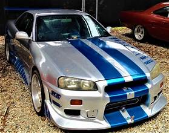

Hello again, this its 2nd site, witch my favorite car
This its my favorite cars, nissan skyline gtr r34, and Toyota Supra
nissan skyline gtr r34

Toyota company since 1978.
The Supra's first design was based on the body of the Toyota Celica, but longer and wider.
From 1986, the Supra was separated from the Celica, after which it became a separate model. Along with this, Toyota stopped using the Celica prefix and the name of the car is exactly Supra.
The first, second and third generations of Supra were produced at the Tahara plant, and the fourth generation at Toyota.
Toyota Supra

issan Sukairain GT-R is a Japanese sports car based on the Nissan Skyline range.
The first cars named "Skyline GT-R" were produced between 1969 and 1972 under the model code KPGC10, and were successful in Japanese touring car racing events.
This model was followed by a brief production run of second-generation cars, under model code KPGC110, in 1973.
Visit my info site